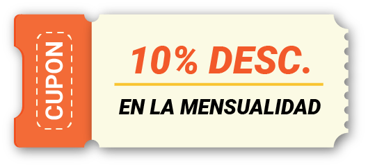
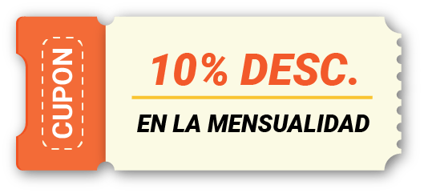

ALGUNAS DE LAS DUDAS MÁS FRECUENTES
Haz click en la pregunta para conocer la respuesta
Puesto que la oferta académica ha aumetado mucho en los últimos años, el rango de precios puede ir desde los $3,500 pesos hasta los $25,000 pesos mensuales (en las opciones más populares).
A la hora de hacer un análisis de si optar por una opción privada, evalúa las reinscripciones, aumentos de matrícula, o si te ofrecen beca, qué tan fácil es perderla (hay universidades donde contemplan dar un número elevado de becas a los estudiantes y quitarselas en los primeros semestres).
También piensa en los materiales como libros, uniformes, cursos de inglés, etc. (generalmente en las universidades privadas todo esto tiene un costo extra considerablemente alto).
Es posible en carreras de poca demanda, aun así, tienes que volver a hacer el proceso de admisión como cualquier aspirante y salir seleccionado, en una carrera de alta demanda no esposible.
La recomendación es: “si
entras a otra carrera o universidad es para
quedarte ahí, no mientras”.
Claro que hay segundas y terceras opciones para estudiar la universidad, pero lo que tienes que preguntarte es si realmente esto te va a servir para llegar al objetivo profesional que tienes y es que debemos entender que una carrera profesional no se construye con remedios rápidos o, en este caso, estudiar solo por estudiar, debes planear a dónde quieres llegar y cuál es el mejor camino, OJO, no el camino más fácil o el que puedes seguir en este momento.
Estudiar en una segunda opción tiene ventajas, pero también algunas desventajas, la primera es que la carrera no será la misma ya sea por las materias, los profesores, instalaciones, sino también por los programas de movilidad estudiantil, validez oficial (este punto es muy importante) o debido a que el título no es igual, por ejemplo médico estomatólogo que licenciado en odontología.
Otra desventaja es el prestigio de la universidad ya que algunos posgrados no aceptan egresados de algunas universidades.
En algunas ocasiones sí, pero son muy pocas las facultades que lo hacen. Además, solo un porcentaje muy bajo de materias se revalidad de institución a institución. Aun así, si quisieras hacer este cambio tienes que volver a hacer todo el proceso de admisión y ser seleccionado para posteriormente continuar con el trámite de revalidación de materias.
Depende del Reconocimiento de Validez Oficial de Estudios (RVOE) que es un certificado otorgado por las autoridades educativas del país para garantizar la oficialidad de los estudios. Por lo cual la Secretaría de Educación, Ciencia, Tecnología e Innovación de la Ciudad de México reconoce la validez de los estudios impartidos por particulares en los tipos educativos medio superior, superior (técnico superior, licenciatura y posgrado).
Algo importante que debes tener en cuenta es que hay de dos tipos Federal y Estatal; si el Rvoes es estatal solo tendrá validez en el estado y no podrás hacer especialidades, maestrías, etc. que estén fuera de tu estado o que tengan mayor rigurosidad académica.
Solo entre universidades con programas estudiantiles similares, la universidad receptora deberá aplicar un examen de admisión y un comité deberá aprobar el caso por medio del Consejo Técnico Directivo, pero generalmente no es posible, si tu plan es hacer examen y entrar a una autónoma de menor demanda para después cambiarte es muy probable que no te vaya a funcionar.
Agenda una entrevista de Trayecto de vida profesional
AQUÍ
 
